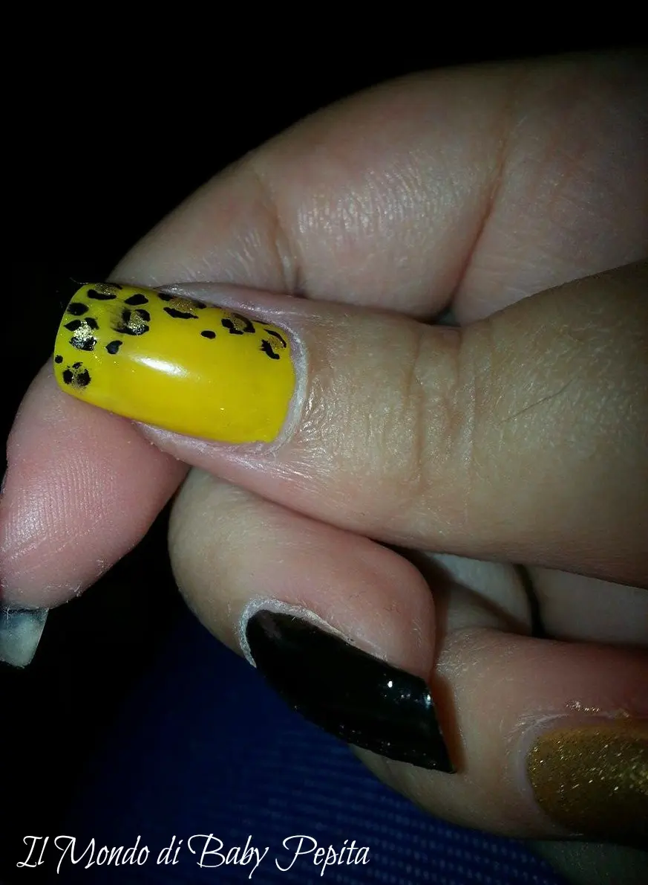
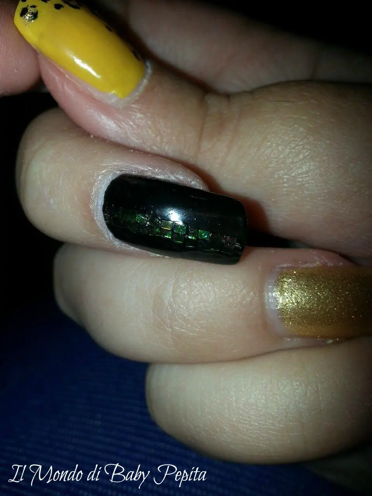
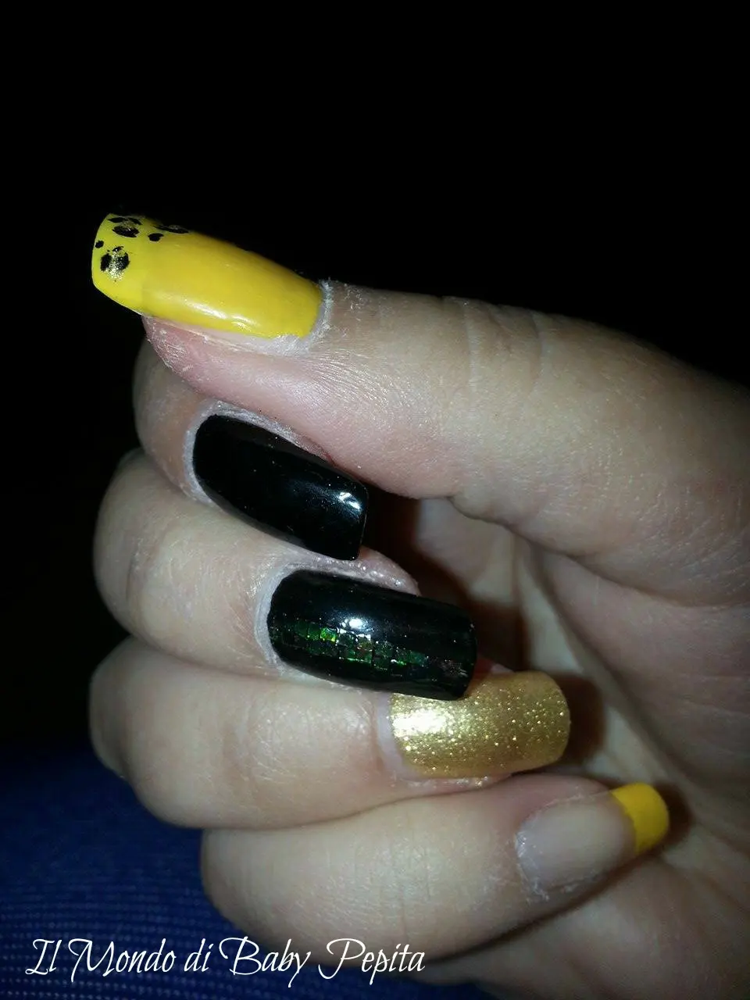
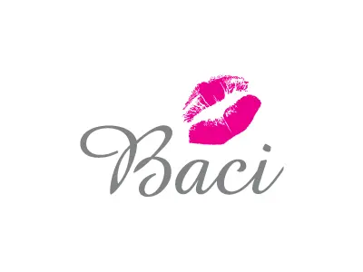

Proposta nail art ottobre
RagazzeeeeeeeeeeCome va?So già che ho fatto vedere questa mia proposta nail art oro, giallo e nero sulla mia paginetta facebook.
Voglio però parlarvene più dettagliatamente, mostrandovi le foto.Quello che ho usato è:- Smalto glitter ORO della Crystal
- Smalto nail laquer GIALLO OCRA CHIARO - KIKO n°369
- Smalto nail laquer NERO - KIKO n° 264
- Glitter per decorare
- Top coat per sigillare
- Penna pennarello STAEDTLER lettera M nera per decorare (che ve ne ho parlato oin un altro articolo http://baby-pepita.blogspot.it/2015/05/nail-art-proposta-di-maggio.html)

Il pollice l'ho voluto fare leopardato tutto giallo, con chiazze oro.
Qui ho usato la penna a pennarello che potrete trovare in qualsiasi cartoleria.

L'indice l'ho fatto tutto nero semplice . .Il medio l'ho voluto fare tutto nero con una striscia in verticale di glitter gialli. .
L'anulare tutto color oro glitterato. .Infine il mignolino l'ho fatto con un french giallo.Un pò stravagante per tutte le unghia ma d'effetto. . a me è piaciuto tanto, ditemi la vostra. .